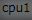

#sleep(5) click() click() click() i = 0 while True: #ファイル名コピー keyDown(Key.CTRL) type("c") keyUp(Key.CTRL) #active window移動 excle -> hew keyDown(Key.ALT) type(Key.TAB) keyUp(Key.ALT) #ファイルを開く keyDown(Key.CTRL) type("o") keyUp(Key.CTRL) sleep(1) #ファイル名コピー keyDown(Key.CTRL) type("v") keyUp(Key.CTRL) #ファイルを開く、決定 type(Key.ENTER) #active window移動 hew -> excle keyDown(Key.ALT) type(Key.TAB) keyUp(Key.ALT) #右のセルに移動、2番目は検索内容、1番目はファイル名 type(Key.RIGHT) #ここまでやった。と見えるように塗りつぶし click() sleep(1) #検索内容をコピー keyDown(Key.CTRL) type("c") keyUp(Key.CTRL) #active window移動 excle -> hew keyDown(Key.ALT) type(Key.TAB) keyUp(Key.ALT) #検索windowを開く type(Key.F4) #検索内容をペースト keyDown(Key.CTRL) type("v") keyUp(Key.CTRL) #検索、決定 type(Key.ENTER) #active window移動 hew -> excle keyDown(Key.ALT) type(Key.TAB) keyUp(Key.ALT) #右のセルに移動、3番目は行番号 type(Key.RIGHT) #行番号をコピー keyDown(Key.CTRL) type("c") keyUp(Key.CTRL) #active window移動 excle -> hew keyDown(Key.ALT) type(Key.TAB) keyUp(Key.ALT) #行番号でジャンプを開く keyDown(Key.CTRL) type("g") keyUp(Key.CTRL) #行番号をペースト keyDown(Key.CTRL) type("v") keyUp(Key.CTRL) #検行番号でジャンプを開く、決定 type(Key.ENTER) os.system("C:\sikuli\waiting_input.sikuli\msgbox.vbs") #keyDown(Key.ALT) #type(Key.TAB) #keyUp(Key.ALT) click() click() #ビルド type(Key.F7) click() type(Key.LEFT) type(Key.LEFT) type(Key.DOWN) #type(Key.DOWN) i = i + 1 print i